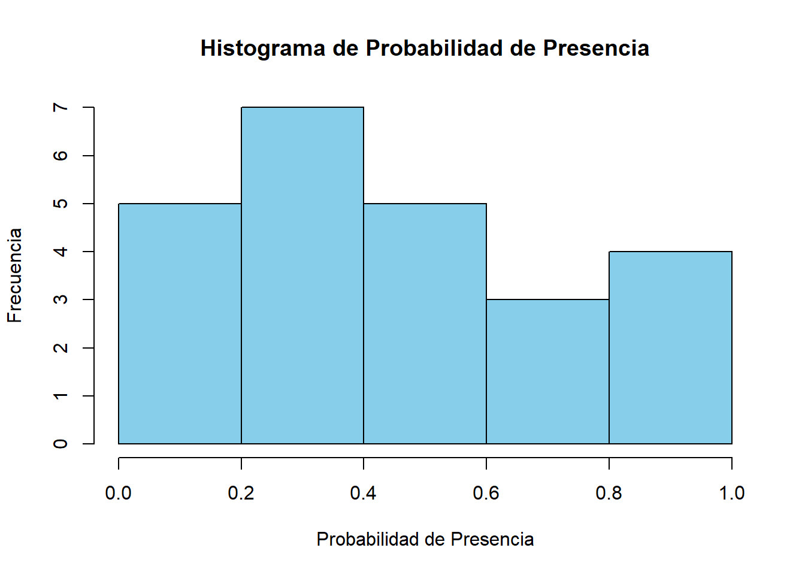
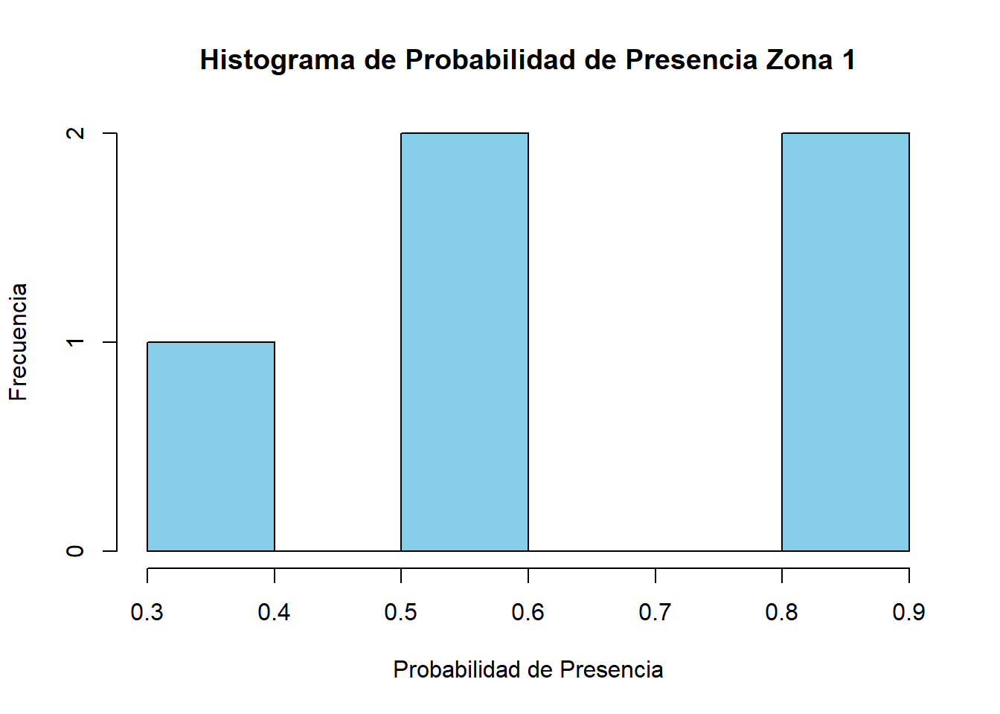
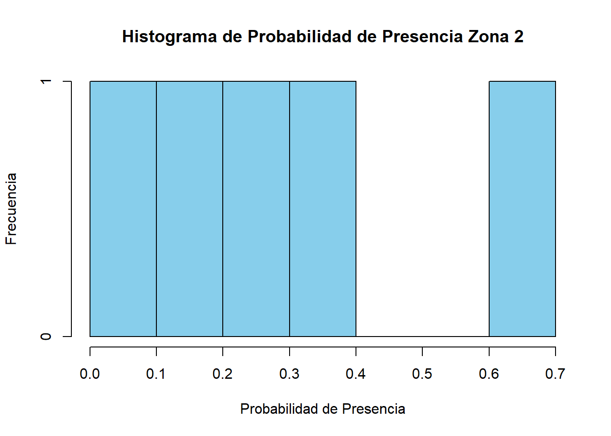
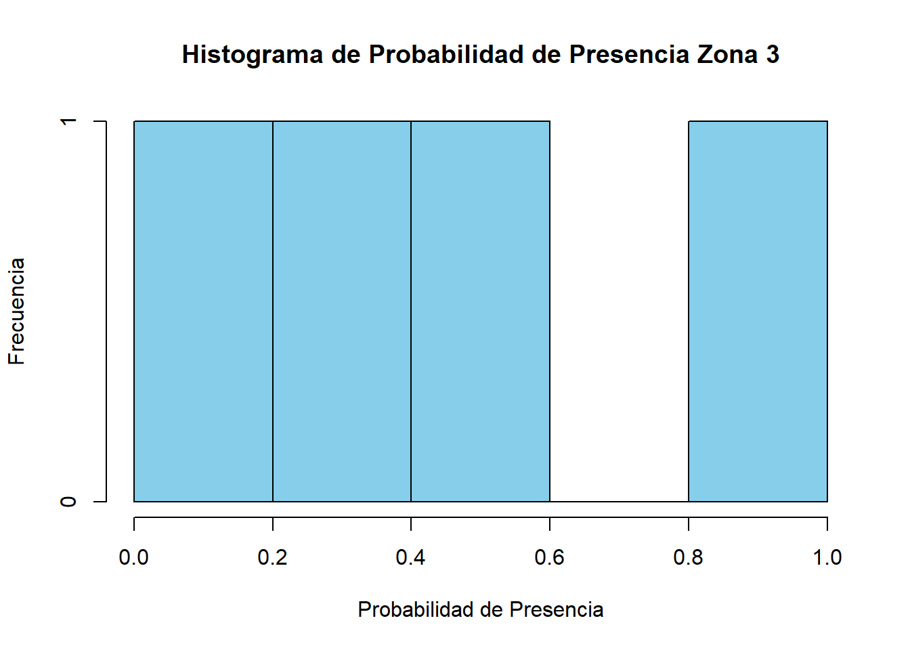
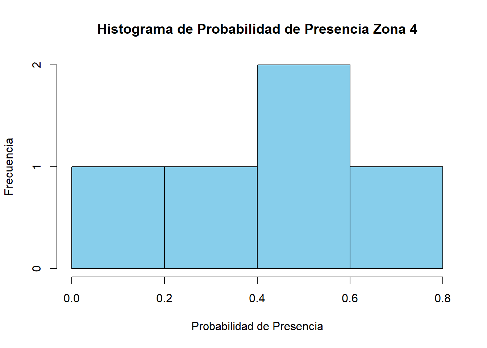
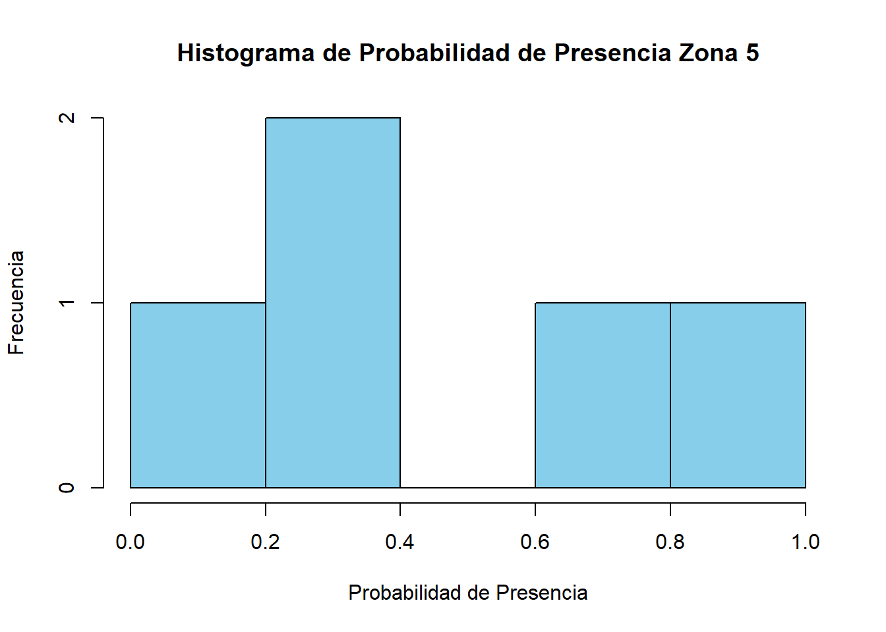

prueba <- c(11,15,21.3,19.9)
prueba[1] 11.0 15.0 21.3 19.9Construya un vector de nombre prueba con los siguientes valores: 11, 15, 21.3, 19.9.
prueba <- c(11,15,21.3,19.9)
prueba[1] 11.0 15.0 21.3 19.9Realice las siguientes operaciones usando la notación de R:
prueba^3[1] 1331.000 3375.000 9663.597 7880.5992*(prueba + 3*prueba^{3})-1[1] 8007.00 20279.00 58023.18 47322.39log(prueba^2/(2*prueba^4))[1] -5.488938 -6.109248 -6.810561 -6.674587prueba por el tercer elemento del vector prueba.prueba[1]*prueba[3][1] 234.3Cree un vector llamado texto que contenga las palabras: poblacion y ciudad (sí, sin tilde) en el bloque de código a continuación:
texto <- c("poblacion","ciudad")
texto[1] "poblacion" "ciudad" texto.print(texto)[1] "poblacion" "ciudad" texto.mode(texto)[1] "character"texto.length(texto)[1] 2En un experimento de laboratorio, individuos de una especie de peces fueron sometidos a tres tipos de tratamiento:
Para cada uno de los tratamientos se utilizaron 4 acuarios con 10 individuos cada uno, para un total de 12 acuarios. La siguiente tabla muestra el número de individuos que sobrevivieron en cada acuario al terminar el experimento.
Cada casilla corresponde al número de individuos que sobrevivieron en un acuario y cada acuario ha sido sometido a un solo tratamiento.
Tabla 1. Marco de datos a crear.
| Solución salina | pH bajo | pH alto |
|---|---|---|
| 1 | 1 | 5 |
| 1 | 2 | 4 |
| 1 | 3 | 4 |
| 1 | 1 | 2 |
Ingrese los datos anteriores como un marco de datos directamente en R (no lo haga desde Excel), organizando el dataframe correctamente. Ayuda: Para introducir los datos manualmente funciones como rep() pueden ser muy útiles.
Importe el archivo especies.xlsx a R como un marco de datos dataframe. Estos datos corresponden a un estudio donde se midió la probabilidad de presencia para ciertas especies de ranas. Adicionalmente una medida de la variación en los datos fue incluida.
solucion_salina <- rep(1,4)
bajo <- c(1,2,3,1)
alto <- c(5,4,4,2)
datos <- data.frame(solucion_salina,bajo,alto)
print(datos) solucion_salina bajo alto
1 1 1 5
2 1 2 4
3 1 3 4
4 1 1 2library(readxl)
data <- read_xlsx("especies.xlsx")
data# A tibble: 25 × 4
Zona Especie Prob_presencia variacion
<dbl> <chr> <chr> <chr>
1 1 C_fitzingeri 0.543517275801064 82.0
2 1 D_ebraccatus 0.896378663277129 67.0
3 1 E_pustulosus 0.564983345982114 66.0
4 1 O_histrionica 0.353853894403795 49.0
5 1 S_phaeota 0.816077324992551 29.0
6 2 C_fitzingeri 0.626115459637747 37.0
7 2 D_ebraccatus 0.288871351695315 NA
8 2 E_pustulosus 0.356598233431537 15.0
9 2 O_histrionica 0.191172771642183 71.0
10 2 S_phaeota 0.0698029422652811 47.0
# ℹ 15 more rowsUna vez haya importado los datos:
set_dat <- subset(data,Especie =="S_phaeota")
set_dat# A tibble: 5 × 4
Zona Especie Prob_presencia variacion
<dbl> <chr> <chr> <chr>
1 1 S_phaeota 0.816077324992551 29.0
2 2 S_phaeota 0.0698029422652811 47.0
3 3 S_phaeota NA 60.0
4 4 S_phaeota 0.245801736767652 11.0
5 5 S_phaeota 0.194327761311366 88.0 zon_dat <- subset(data,(Zona == 1 | Zona ==2))
zon_dat# A tibble: 10 × 4
Zona Especie Prob_presencia variacion
<dbl> <chr> <chr> <chr>
1 1 C_fitzingeri 0.543517275801064 82.0
2 1 D_ebraccatus 0.896378663277129 67.0
3 1 E_pustulosus 0.564983345982114 66.0
4 1 O_histrionica 0.353853894403795 49.0
5 1 S_phaeota 0.816077324992551 29.0
6 2 C_fitzingeri 0.626115459637747 37.0
7 2 D_ebraccatus 0.288871351695315 NA
8 2 E_pustulosus 0.356598233431537 15.0
9 2 O_histrionica 0.191172771642183 71.0
10 2 S_phaeota 0.0698029422652811 47.0 Utilizando el set de datos del punto anterior realice:
limpio = subset(data,data$Prob_presencia!="NA")
hist(as.numeric(limpio$Prob_presencia), main ="Histograma de Probabilidad de Presencia", xlab = "Probabilidad de Presencia", ylab= "Frecuencia", col = "skyblue")
zonas <- unique(data$Zona)
limpio = subset(data,data$Prob_presencia !="NA")
print(length(zonas))[1] 5for (i in 1:length(zonas)){
fin = subset(limpio,zonas[i]==Zona)
hist(as.numeric(fin$Prob_presencia),main =paste("Histograma de Probabilidad de Presencia Zona",i) , xlab = "Probabilidad de Presencia", ylab= "Frecuencia", col = "skyblue")
}



